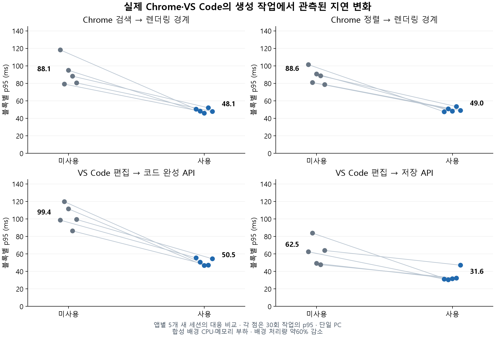

시스템소스 공개
RamFlow
지정한 배경 작업이 자원을 양보해 현재 사용하는 앱의 응답을 보호합니다. 합성 CPU·메모리 경쟁 부하에서 Chrome과 VS Code를 앱별 5회 교차 비교했습니다.
- C# / .NET
- Windows
- 검증
앱 응답 지연 (기능별 p95 중앙값)
끔
켬
45–49%감소
배경 작업 처리량 (양보한 대가)
끔
켬
약60%감소
